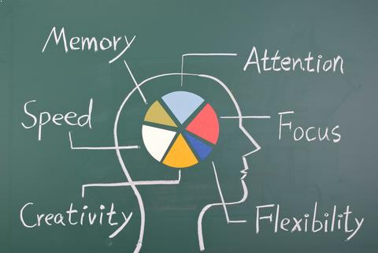

Impact of Gaming
Positive benefits of gaming
Gaming is not only fun but it also brings a lot of benefits to the user:
Problem solving and logic - playing Angry Birds or Cut the Rope trains the brain to come up with more creative ways to solve problems
Critical Thinking - Video games encourage players to make faster decisions using what is seen in the game, this is very helpful and can teach people on trying to find different solutions to a problem.
Coping mechanism - Video games can also acts as a coping mechanism especially for people with frustration or pen-up aggression. Games can be something that helps people cope with sadness, anger, etc..
Problem solving and logic - playing Angry Birds or Cut the Rope trains the brain to come up with more creative ways to solve problems
Critical Thinking - Video games encourage players to make faster decisions using what is seen in the game, this is very helpful and can teach people on trying to find different solutions to a problem.
Coping mechanism - Video games can also acts as a coping mechanism especially for people with frustration or pen-up aggression. Games can be something that helps people cope with sadness, anger, etc..
Educational Benefits
Not only does gaming do all these things, but it can also be used for educational purposes and have some benefits to it. The right game can assist with the children's learning and help them master things quicker such as basic grammar and maths as opposed to old school flash cards as they are interacting with it.

(HOVER ON ME!)